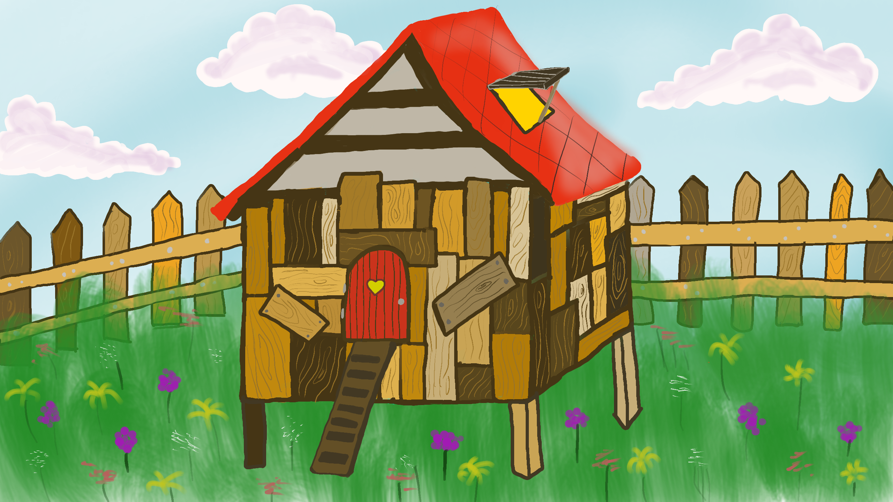

Bienvenue dans votre poulailler dont vous allez être poule en chef.

Vous avez découvert dans un fossé 5 oeufs qui viennent d'éclore, et qui ont donné naissance à 5 magnifiques poussins.
Vous avez également reçu un un don anonyme de 10 portions de nourriture pour lancer votre activité.
Vous allez prendre le rôle de la poule en chef, chaque saison vous allez devoir choisir l'une des actions listés en bas et surveillez l'évolution de votre poulailler. Le but c'est de construire votre empire de poules et survivre le plus longtemps possible en accumulants les oeufs qui représente votre monaie.
Vous devez gérer chaque début de saison :
Les poules peuvent avoir différents tempéraments :
A vous de jouer devenez le seigneur de votre royaume
| Type | Avatar | Temperament | Caractéristiques |
|---|---|---|---|
| Poussin | |
Null (Le tempérament sera acquis après avoir grandi) | Un petit poussin qui mange et dort joyeusement avant de grandir et se transformer en poule ou coq aprés une saison |
| Coq | Null (Le Coq n'a pas de tempérament) | Le coq est primordial pour la reproduction des poules | |
| Poule | |
Insouciante | trop occupée à s’échapper et à s’amuser, elle ne perdra pas de bonheur quand la sécurité du poulailler augmentera, mais aura des risques accrus de finir dans l’estomac d’un prédateur. |
|
Sérieuse | à l’inverse de son acolyte insouciante, le risque qu’elle se fasse manger par un prédateur est extrêmement basse. En revanche, s’occupant elle-même d’assurer sa sécurité, elle voit d’un mauvais œil l’augmentation de la sécurité du poulailler et son bonheur baissera beaucoup à chaque amélioration. | |
|
Maman-poule | son obsession, c’est ses poussins ! Son taux de ponte est donc beaucoup plus élevé que les autres poules. En revanche, travailleuse infatigable pour élever ses petits, elle en oublie parfois de préserver sa santé, et a plus de risque de tomber malade. | |
|
Psychopathe | poule sympathique qui ne s’épanouit que dans un environnement de mort et de désolation. Si lors d’une saison trop peu de poule meurent, son bonheur chutera donc drastiquement. Or, lorsqu’elle devient malheureuse, son penchant pour le meurtre d’autres poules se réveille… Toutefois, sa violence peut parfois se tourner vers les prédateurs, baissant ainsi le nombre de chances que les autres poules se fassent tuer par ces derniers. | |
| Type | Avatar | Temperament | Caractéristiques |
| Niveau | Photo | Description |
|---|---|---|
| 1 |  |
Une tente simple mais suffisante pour se cacher du froid et des prédateurs |
| 2 |  |
Vous avez réussi à construire votre premier poulailler en bois, vous bénéficiez de plus d'espace et de challeur |
| 3 |  | Vous augmentez la sécurité grace au grillage en bois |
| 4 | Le grillage est plus solide et plus haut | |
| 5 | Une bonne extension en pierre pour garder vos choses précieuses | |
| 6 | Vous construisez un mur pour se déffendre des poules titans | |
| 7 |  |
Tout votre poulailler est fabriqué en pierre maintenant |
| 8 | Vous avez maintenant deux tours de surveillance bien hautes et bien solides | |
| 9 | Vous renforcez votre mur avec un fil électrifiant, gare à ceux qui approchent | |
| 10 | Vous êtes au niveau ultime, vous avez maintenant des caméras qui surveillent tout ! Par contre tes poules maintenant se sentent malheureuses |
|
| Niveau | Photo | Description |
La methode utilisé pour les calculs des différents taux est la suivante :
| Type | Taux de ponte | Taux de maladie | Taux de predation | Taux de maternage | Niveau de bonheur |
|---|---|---|---|---|---|
| Maman-poule | rand[50,80] * (bonheur/100)*(5/age) | x plus grand | x * (1/sécurité) | x plus grand | Bonheur + activite.escrime(20)/autreActivité(8)/activite.sortieG(10) - x * nbmort - z*(nbPoules/Tailles) - niveau*5 |
| Insouciante | rand[20,80] * (bonheur/100)*(5/age) | x*(nbPoules/taille)*(1 -(bonheur/100)) (+0.1 -> si couve) | x plus grand | (total des oeufs couvés) * x | Bonheur + activite.danse(20)/autreActivité(8)/activite.sortieG(10) - x * nbmort - z*(nbPoules/Tailles) |
| Sérieuse | x moins grand | Bonheur + activite.escrime(20)/autreActivité(8)/activite.sortieG(10) - x * nbmort - z*(nbPoules/Tailles) + niveau*5 | |||
| Psychopathe | x très petit | Bonheur + autreActivité(8)/activite.sortieG(10) + x * nbmort - y (par saison sans mort) - niveau*5 - z*(nbPoules/Tailles) |
Si vous voulez embarquer avec nous dans l'aventure HappyChick rejoignez nous à l'adresse suivante: